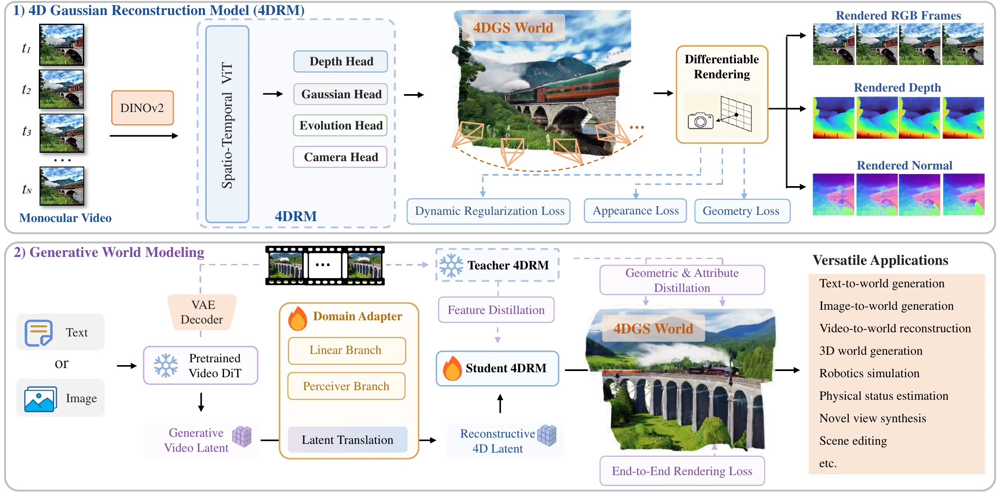
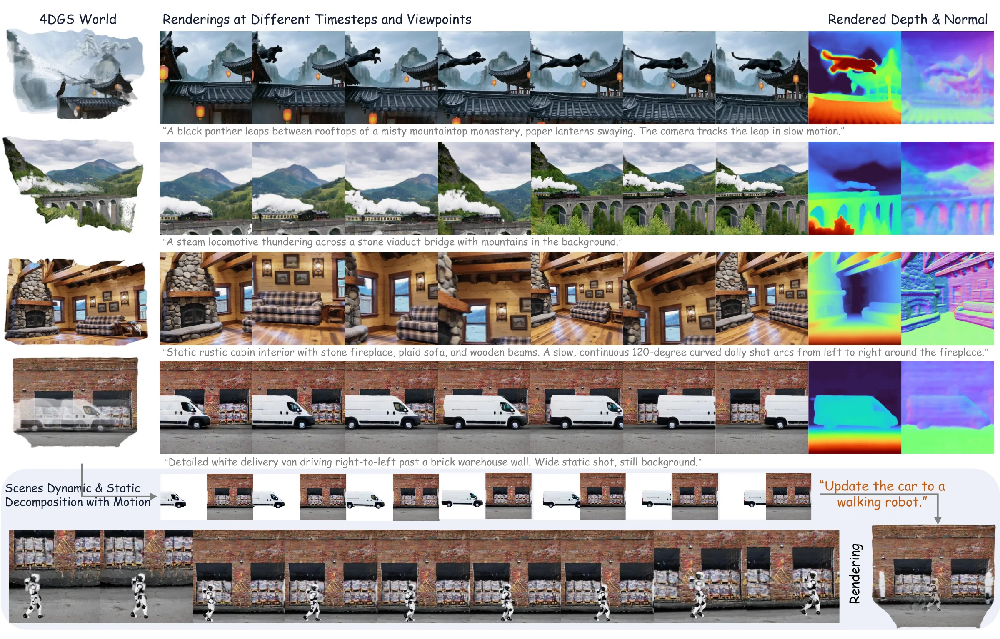

NeurIPS 2026
Aeon
Unifying Video and 3D World Models
AEON generates a world inside the latent space of a pretrained video diffusion model and decodes it into explicit 4D Gaussians, which can be rendered in real time at different timesteps and from different viewpoints.
School of Software, Tsinghua University † Corresponding authors
Abstract
Current world models for explicit world simulation typically follow two distinct pathways: (1) video generative models (e.g., Sora), which simulate realistic appearances but fail to preserve 3D consistency; and (2) 3D generative models (e.g., Marble), which generate geometrically consistent scenes but often yield static, less realistic observations. We present AEON, a unified framework that bridges video-based and 3D-based world models and combines the benefits of both. The key insight of AEON lies in a generative model that operates within the text- or image-conditioned video latent space while producing renderable 4D graphics primitives—specifically, 4D Gaussian Splatting (4DGS)—as the explicit world representation. We train a 4D reconstruction model to predict both 4DGS and camera poses from monocular videos, serving as our initialized 4D decoder. Furthermore, we design a domain adapter that translates generative video latents into reconstructive 4D latents through a distillation process on the video VAE. AEON naturally supports video-based world modeling by rendering 4DGS at predicted camera trajectories, and constructs a persistent 4D environment with scene dynamics for realistic world simulation. Consequently, AEON empowers a diverse range of world modeling applications and achieves state-of-the-art performance on standard benchmarks.
Method
A 4D Gaussian Reconstruction Model (4DRM) first learns to recover a 4DGS world from monocular video. AEON then connects a frozen video diffusion model to this reconstruction model through a domain adapter, so that a generated video latent can be decoded directly into 4D Gaussians.

4D Gaussians as the world representation
Each primitive stores a position, scale, rotation, opacity and color, plus four temporal attributes: a reference time ti, a duration li, a linear velocity vi and an angular velocity ωi. Its opacity follows a Gaussian in time centred at ti, while its position and rotation change with its velocities. Content can therefore appear, move and vanish independently, and the world can be rendered at any continuous timestep.
Training in three stages
-
Reconstruction model
The 4DRM, initialized from MapAnything, learns to predict 4D Gaussians and camera poses from posed videos. Its renderings are supervised for appearance, metric geometry and dynamic disentanglement.
-
Generative distillation
The 4DRM is frozen as a teacher that sees ground-truth frames. A domain adapter and a student 4DRM learn to reproduce the teacher's 4D world from video latents alone, so this stage needs only raw RGB videos.
-
Rendering refinement
The adapter and student are fine-tuned end to end against frames decoded by the video VAE, so the student is optimized for rendering quality rather than imitation alone.
From video latents to 4D latents
The domain adapter adds a linear branch, initialized by closed-form ridge regression, to a Perceiver Bridge that attends across each frame with a global receptive field. A learnable gate starts at zero, so training begins from the linear solution. The adapter output enters the DINOv2 backbone at layer 4, bypassing the patch embedding and the first four blocks, so the upper 20 pretrained blocks are kept as a geometric foundation.
Why not decode the video first and reconstruct it? The 4DRM is trained on real videos, while decoded generations carry VAE and generation artifacts outside that distribution, so decoding errors would compound with reconstruction errors.
Results
Compared with video and 3D world models
Video world models such as Sora render realistic appearance, but they do not keep a generated scene consistent in 3D. 3D world models such as Marble build consistent geometry, but their worlds are often static and less realistic. AEON keeps the realism and dynamics of video and adds the 3D consistency and persistence of an explicit 4D world that can be explored in real time.
| Paradigm | Realistic | 3D consistent | Dynamic | Persistent | Real-time exploration |
|---|---|---|---|---|---|
| Video world model e.g. Sora | Yes | No | Yes | No | No |
| 3D world model e.g. Marble | No | Yes | No | Yes | Yes |
| AEON | Yes | Yes | Yes | Yes | Yes |
What an explicit 4D world supports
Because AEON outputs a 4DGS world rather than a video, the same generation can be rendered at new timesteps and viewpoints, read out as depth and normals, and taken apart. Filtering primitives by lifespan separates static scenery from moving content, and the parts can be edited and recomposed for simulation.

Generated worlds
62 worlds generated from text or from a condition image. Every world is rendered as RGB, depth and normals from the same 4D Gaussians. Select one to explore it.
BibTeX
@inproceedings{zhang2026aeon,
title={{AEON}: Unifying Video and {3D} World Models},
author={Zhang, Weiqi and Zhang, Wenyuan and Liu, Yu-Shen and Zhou, Junsheng},
booktitle={Advances in Neural Information Processing Systems (NeurIPS)},
year={2026}
}